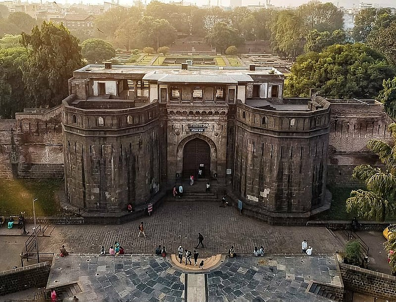

Pune formerly known as Poona (the official name from 1818 until 1978), is one of the most important industrial and educational hubs of India, with an estimated population of 7.4 million as of 2020. Pune is considered to be the cultural and educational capital of Maharashtra state. It has been ranked "the most liveable city in India" several times.Together with the municipal corporation areas of Pimpri-Chinchwad (PCMC) and Pune (PMC), and the three cantonment towns of Camp, Khadki, and Dehu Road, Pune forms the urban core of the eponymous Pune Metropolitan Region (PMR). As of 2021, with an area of 7,256 sq km, PMR is geographically the largest metropolitan region in Maharashtra state and 5th largest in India.
Situated 560 metres (1,837 feet) above sea level on the Deccan plateau, on the right bank of the Mutha river, Pune is the administrative headquarters of the Pune district. In the 18th century, the city was the seat of the Peshwas, the prime ministers of the Maratha Empire, and one of the most important political centres in the Indian subcontinent.[29] Prior to this, the city had been ruled by the Ahmadnagar Sultanate, the Mughals and the Adil Shahi dynasty. Historical landmarks include the Lal Mahal, the Kasba Ganapati temple and Shaniwar Wada. Major historical events involving the city include the Mughal–Maratha Wars and the Anglo-Maratha Wars.
Pune is widely regarded to be the second major IT hub and the most important automobile and manufacturing hub of India. Pune has several world class educational institutions and is therefore widely regarded as "Oxford of the East". The city has emerged as a major global educational hub in recent decades, with nearly half of the total number of international students in the country studying in Pune. Distinguished institutes of engineering, information technology and film, as well as schools for management science and advanced training, attract students and professionals from India and overseas

The earliest reference to Pune (Marathi: पुणे) is an inscription on a Rashtrakuta Dynasty copper plate dated 937 CE, which refers to the town as Punya-Vishaya. By the 13th century, it had come to be known as Punawadi.
During the Rashtrakuta dynasty, the city was referred to as Punnaka and Punyapur, while the copper plates of 758 and 768 CE show that the Yadava dynasty had renamed the city Punakavishaya and Punya Vishaya. 'Vishaya' means land, and 'Punaka' and 'Punya' mean holy. The city was known as Kasbe Pune when under the command of Maratha king Shivaji's father, Shahaji Raje Bhosale. Mughal emperor Aurangzeb renamed the city Muhiyabad (the only divergent naming) some time between 1703 and 1705 in memory of his great-grandson Muhi-ul-Milan, who died there. The name Muhiyabad was lost soon after Aurangzeb's death. Anglicized to Poona in 1857 by the English during British rule, the city's name was changed to Pune in 1978.